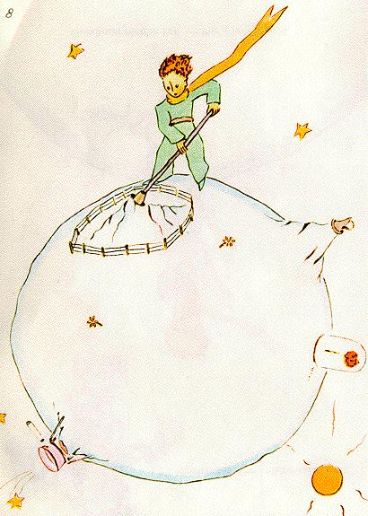

El principito arrancó también, con un poco de melancolía, los últimos brotes de baobabs. Creía que nunca más iba a volver. Pero aquella mañana, todos esos trabajos familiares le parecieron extremadamente agradables. Y, cuando regó por última vez la flor y se dispuso a ponerla al abrigo bajo su globo, descubrió que tenía ganas de llorar.
- Adiós- le dijo a la flor.
Pero ella no le respondió.
- Adiós- repitió.
La flor tosió. Pero no era a causa de su resfrío.
- He sido tonta- le dijo al fin. - Te pido perdón. Procura ser feliz. 
Él se sorprendió por la ausencia de reproches. Se quedó ahí desconcertado, con el globo en el aire. No comprendía esa calma dulzura.
- Pero sí, te quiero- le dijo la flor. - No lo supiste, por mi culpa. Eso no tiene ninguna importancia. Pero tú has sido tan tonto como yo. Procura ser feliz... Deja ese globo tranquilo. Ya no lo quiero.
- Pero el viento...
- No estoy tan resfriada.... El aire fresco de la noche me hará bien. Soy una flor.
- Pero los bichos...
- Debo soportar dos o tres orugas si quiero conocer a las mariposas. Parece que es hermoso. Si no, quién habrá de visitarme ? Tú estarás lejos. En cuanto a los animales grandes, no les temo. Tengo mis uñas.
Y mostraba cándidamente sus cuatro espinas. Luego agregó:
- No des más vueltas, es irritante. Has decidido partir. Vete.
Porque no quería que la viera llorar. Era una flor tan orgullosa...
| Chapitre VIII | |
Capítulo VIII |
| Chapitre IX | Índice | |
| Chapitre X | Capítulo X |